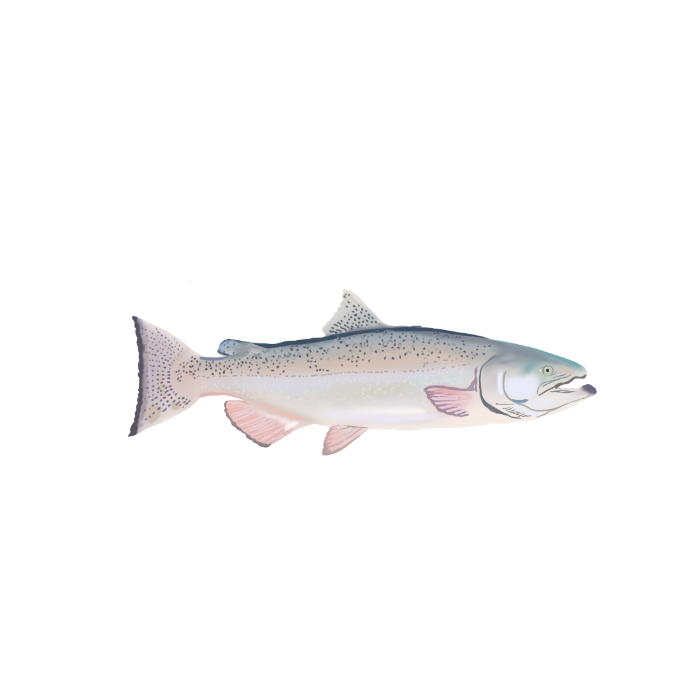
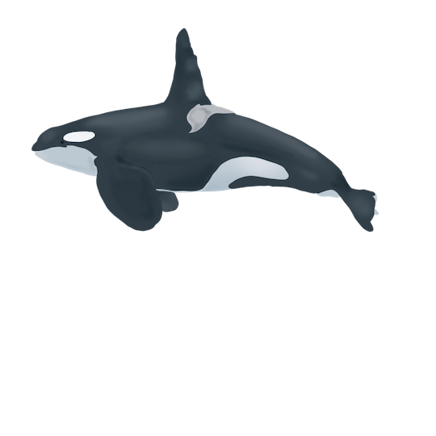
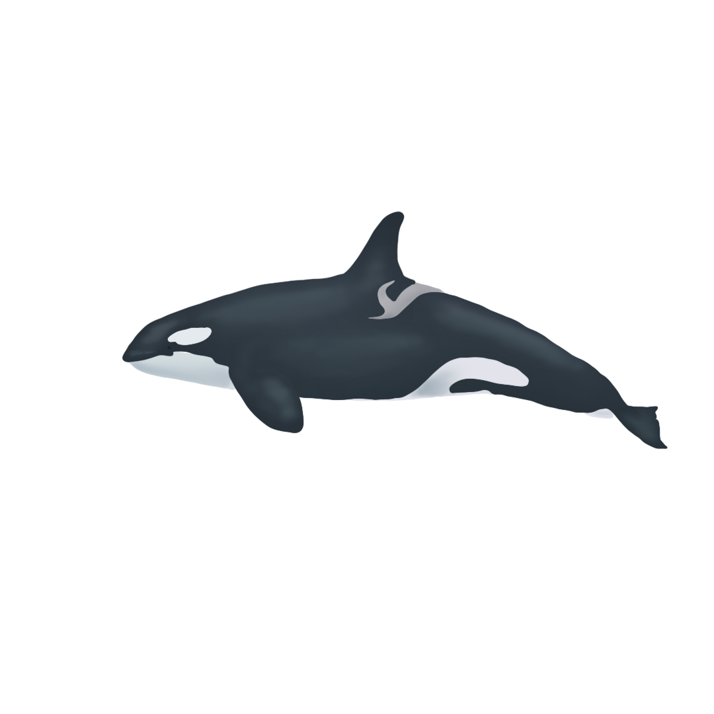

Current factors impacting resident orca whale populations in
The PNW
Noise pollution from vessels
May hinder communication abilities and hunting
May hinder communication abilities and hunting
These salmon are the main food source for the resident whales
 Contaminants in the environment have been found to be stored in orca whales' blubber- as they burn fat when food sources are low, contaminants enter their blood stream.
 